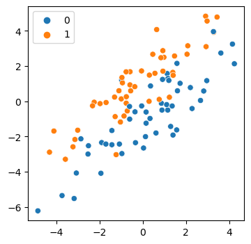
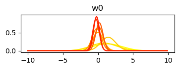
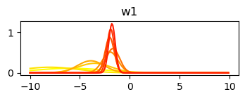
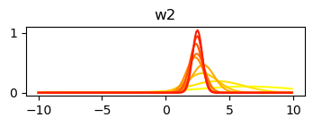
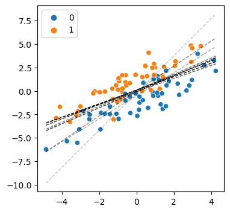

import matplotlib.pyplot as plt
import matplotlib
import numpy as np
import pymc as pm
import seaborn as sns
from scipy.stats import normProblem
Recently I had to solve a problem that involved online learning, i.e. updating the weights of your model only with incoming batches of data. This is opposed to the much more familiar offline training paradigm where you cycle through multiple epochs over a single dataset.
There’s lots of potential use cases for this - think of any situation where you want your model continuously updating as data is simultaneously coming in (e.g. streaming apps, stock market prediction, etc.). The problem arises that the ‘right’ way of updating your model depends heavily on how much you want to balance new vs old data in terms of its influence on the the model. On top of this, even if you want to treat all data points equally, a new learning rate must still be chosen at each update, and this is non-trivial given that you don’t know anything about future samples.
Proposed solution
This post will cover arguably the simplest and most robust approach of using a bayesian framework to update the posterior distribution with each new batch of data. The key insight here is that bayesian updates are implemented quite naturally by simply resetting the prior distribution to whatever the posterior was, and then recalculating the new posterior based on the new data. The updated “weights” (the way we think of them in a frequentist sense) correspond to the mode of the most recently updated posterior. Note that this method does treat all data points equally, regardless of time, but that’s a simplifying assumption that’s helpful for now.
Here I’ll give an example using a simple logistic regression.
With a model like this, the updates are easy (and fast!) to calculate via quadratic approximation of the posterior in PyMC. Later I’ll mention some more generalizable frameworks for approximating the posterior with neural networks.
Import
Simulate some data for a logistic regression
(doesn’t matter how, as long as we can visualize a decision boundary)
I’ll use 100 samples for simplicity
n_obs = 100
rng = np.random.default_rng()
x0_obs = rng.normal(5, 2, size=n_obs)
y_obs = rng.binomial(1, 0.5, size=n_obs)
y_vec = np.zeros((len(y_obs), 2))
y_vec[np.arange(len(y_obs)), y_obs] = 1
mu_obs = y_vec @ np.array([1, 3]) + (y_vec @ np.array([1, 1])) * x0_obs
x1_obs = rng.normal(mu_obs, 1)
x0_obs = x0_obs - x0_obs.mean()
x1_obs = x1_obs - x1_obs.mean()
x_obs = np.concatenate(([np.ones(x0_obs.shape[0])], [x0_obs], [x1_obs])).T
plt.figure(figsize=(4, 4))
sns.scatterplot(x=x0_obs, y=x1_obs, hue=y_obs)
plt.show()
Specify the model & obtain the first posterior
Using just the first batch of 10 samples
(and I’ll say to update the model a total of 10 times after that, 10 samples at a time)
steps = 10
num_features = x_obs.shape[1]
step = n_obs // steps
x_start = x_obs[:step, :]
y_start = y_obs[:step]
with pm.Model() as start_model:
# use Normal as priors
# w is our list of model weights
w = pm.Normal("w", 0, 10, shape=num_features)
p = pm.math.invlogit(x_start @ w)
# likelihood function
y = pm.Binomial("y", 1, p, observed=y_start)
# estimate the posterior as a gaussian
mean_w = pm.find_MAP()
hess = pm.find_hessian(mean_w, vars=[w])
var_cov = np.linalg.inv(hess)
std_w = np.sqrt(np.diag(var_cov))
100.00% [16/16 00:00<00:00 logp = -10.35, ||grad|| = 0.0050886]
Code explanation
Let me summarize what’s going on here:
Our model has 3 weights (2 + bias), are denoted by w, and each given a prior with a mean of 0 and stdev of 10
The likelihood function is specified here as a bernoulli (or binomial with n=1) with p being a linear function of inputs * weights
PyMC enables bayesian inference either through estimation or sampling of the posterior. In this case, we estimate it directly by finding the maximum of the posterior (analogous to maximum likelihood estimation) and describing its curvature with the hessian (a matrix of second-order partial derivatives). If we assume the shape of the posterior is gaussian, the hessian is sufficient to derive its standard deviation. Note that we could also sample the posterior instead, but that would be more expensive and won’t scale to n-dimensional problems.
Notice then that the whole posterior for w is described by only two terms: mean_w and std_w (the mean/mode of a gaussian and its standard deviation). We can view their current values:
print("means:", mean_w["w"])
print("standard devs:", std_w)means: [ 1.31026875 -5.99367736 6.3300888 ]
standard devs: [2.07364747 3.53659583 3.7744848 ]Subsequent updates
For subsequent updates, all we need is to reset our prior on w to the posterior we just found. The next posterior is discovered by simply repeating the same inference process on a new batch of data.
mus, sigmas = [], []
for t in range(step, n_obs, step):
x_new = x_obs[t:t+step]
y_new = y_obs[t:t+step]
with pm.Model() as updated_model:
# Reset priors to posteriors from previous iteration, unless weights are fixed
updated_mus = mean_w["w"]
updated_sigmas = std_w
mus.append(updated_mus)
sigmas.append(updated_sigmas)
w = pm.Normal("w", updated_mus, updated_sigmas, shape=num_features)
p = pm.math.invlogit(x_new @ w)
y = pm.Binomial("y", 1, p, observed=y_new)
mean_w = pm.find_MAP()
hess = pm.find_hessian(mean_w, vars=[w])
var_cov = np.linalg.inv(hess)
std_w = np.sqrt(np.diag(var_cov))
100.00% [13/13 00:00<00:00 logp = -6.6914, ||grad|| = 0.0018485]
100.00% [13/13 00:00<00:00 logp = -11.45, ||grad|| = 0.00042804]
100.00% [10/10 00:00<00:00 logp = -8.2299, ||grad|| = 2.5082]
100.00% [9/9 00:00<00:00 logp = -14.18, ||grad|| = 5.6728]
100.00% [7/7 00:00<00:00 logp = -3.598, ||grad|| = 1.3588]
100.00% [7/7 00:00<00:00 logp = -4.296, ||grad|| = 3.5075]
100.00% [7/7 00:00<00:00 logp = -4.5569, ||grad|| = 2.7495]
100.00% [7/7 00:00<00:00 logp = -4.5458, ||grad|| = 1.4423]
100.00% [10/10 00:00<00:00 logp = -6.5989, ||grad|| = 7.722]
Plot changes to the posterior with each update
mus = np.array(mus)
sigmas = np.array(sigmas)
cmap = matplotlib.cm.autumn
x_axis = np.arange(-10, 10, 0.1)
for j in range(mus.shape[1]):
plt.figure(figsize=(4, 1))
plt.title(f"w{j}")
for c, (mu, sigma) in enumerate(zip(mus[:, j], sigmas[:, j])):
plt.plot(x_axis, norm.pdf(x_axis, mu, sigma), color=cmap(1 - c / mus.shape[0]))


In order to see the decision boundary, I need the weights as point estimates, so I just take the mean of the posterior.
Below shows how the decision boundary changed with each update.
plt.figure(figsize=(4, 4))
sns.scatterplot(x=x0_obs, y=x1_obs, hue=y_obs.flatten())
alpha0 = alpha = 1 / mus.shape[0]
for mu in mus:
w0, w1, w2 = mu
b = -w0/w2
m = -w1/w2
xd = np.array([x0_obs.min(), x0_obs.max()])
yd = m*xd + b
plt.plot(xd, yd, 'k', lw=1, ls='--', alpha=min(alpha, 1))
alpha += alpha0
plt.show()
The figure shows the decision boundary change at each update, where the darker lines show the later updates. You can see the initial lines are a bit wonky, but as new data is added the updates converge on a good estimate of the boundary.
And that’s it!
Further reading
Just as I’ve implemented this solution as a bayesian regression, the same approach could be taken using more complex (e.g. deep) models by implementing them as bayesian neural networks (e.g. check out pyro or this more lightweight and very impressive package). Because the parameters of a bayesian NN are described as posterior distributions, they could also be updated in an online fashion by continually resetting posteriors <-> priors.